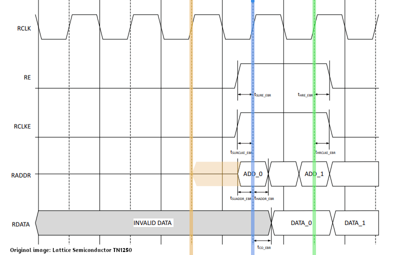

The whole fetch-decode-execute cycle is implemented as a large state machine. The first few states deal with fetching the two bytes that make up an instruction and making sure that the immutable registers 0 and 1 as well as the always on bit in register 13 have their correct values.
case(state)
FETCH1 : begin
mem_raddr <= ip;
state <= halted ? FETCH1 : FETCH2;
end
FETCH2 : begin
r[0] <= 0;
r[1] <= 1;
r[13][31] <= 1; // force the always on bit
state <= FETCH3; // there need to be two clock cycles between loading the mem_raddr and reading mem_data_out
r[15] <= ip1; // but then we can update and read every new clock cycle
mem_raddr <= ip1; // we can already assign new read address
end
FETCH3 : begin
instruction[15:8] <= mem_data_out;
state <= FETCH4;
end
FETCH4 : begin
instruction[7:0] <= mem_data_out;
r[15] <= ip1;
div_go <= 0;
state <= DECODE;
div <= 0;
pop <= 0;
loadb3 <= 0;
loadb2 <= 0;
loadb1 <= 0;
loadb0 <= 0;
branch <= 0;
storb3 <= 0;
storb2 <= 0;
storb1 <= 0;
storb0 <= 0;
loadli <= 0;
end
In the FETCH1 state we start with setting the memory address to read from ip (the addressable bits of register 15. in our case 18 bits that allow for 256K addressable bytes). The we proceed to the next state unless the CPU has been halted.
In the FETCH2 state make sure that immutable parts are set to their correct values and we set both the memory address to read from as well as the PC (register 15) to the next address and we proceed to the next state. We increment the address to read from even though we are not reading anything yet because actual reading of bytes has a delay. More on this in a moment.
In the FETCH3 state we read the high byte of the instruction from the address that was set during the FETCH1 state.
Likewise, in the FETCH4 state we read the low byte of the instruction from the address that was set during the FETCH2 state. We also set all the signals we are going to compute in the DECODE state to their defaults.
Why do we need to set the read address two states (= two clock cycles) in advance of actually reading the byte at that address?
The reason for this is illustrated in the timing diagram for blocks rams (BRAMs) gleaned from TN1250. Similar timings are valid for single port ram although I had to find that out by experimenting as specific documentation is sparse.
Anyway, if a the leading edge of a certain clock cycle (the blue line below) an address is valid, we can read the data half a clock cycle later, so certainly at the next leading edge (the green line). However, for an address to be valid at the blue line, it has to be set earlier, for example at the yellow line. Would we set the address at the blue it would become available only a little bit later during that clock cycle due to gate delays and certainly would not be available directly for reading by the BRAM.
Once we do have addresses ready to be read by the BRAM, we can read a byte every clock cycle. so after setting the address for the hi byte of the instruction we can set the address for the low byte of the instruction even though we haven't actually read the high byte yet.